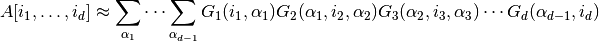

4. Tensor decomposition
One of the greatest features of tensors is that they can be represented compactly in decomposed forms and we have powerful methods with guarantees to obtain these decompositions.
In this tutorial we will go over these decomposed forms and how to perform tensor decomposition. Refer to [1] for more information on tensor decomposition.
4.1. Kruskal form of a tensor
The idea is to express the tensor as a sum of rank one tensors. That is, a sum of outer product of vectors. Such representation can be obtained by applying Canonical Polyadic Decomposition (also known as CANDECOMP-PARAFAC, CP, or PARAFAC decomposition).
4.1.1. CANDECOMP-PARAFAC decomposition
We demonstrate here how to perform a Canonical Polyadic Decomposition. A rank-r Parafac decomposes a tensor into a linear combination of r rank-1 tensors (See [1] for more details).
First, let’s create a second order tensor that is zero everywhere except in a swiss shape that is one.
>>> import numpy as np
>>> import tensorly as tl
>>> tensor = tl.tensor([[ 0., 0., 0., 0., 0., 0., 0., 0., 0., 0., 0., 0.],
[ 0., 0., 0., 0., 1., 1., 1., 1., 0., 0., 0., 0.],
[ 0., 0., 0., 0., 1., 1., 1., 1., 0., 0., 0., 0.],
[ 0., 0., 0., 0., 1., 1., 1., 1., 0., 0., 0., 0.],
[ 0., 1., 1., 1., 1., 1., 1., 1., 1., 1., 1., 0.],
[ 0., 1., 1., 1., 1., 1., 1., 1., 1., 1., 1., 0.],
[ 0., 1., 1., 1., 1., 1., 1., 1., 1., 1., 1., 0.],
[ 0., 1., 1., 1., 1., 1., 1., 1., 1., 1., 1., 0.],
[ 0., 0., 0., 0., 1., 1., 1., 1., 0., 0., 0., 0.],
[ 0., 0., 0., 0., 1., 1., 1., 1., 0., 0., 0., 0.],
[ 0., 0., 0., 0., 1., 1., 1., 1., 0., 0., 0., 0.],
[ 0., 0., 0., 0., 0., 0., 0., 0., 0., 0., 0., 0.]])
We will now apply a rank-2 CANDECOMP-PARAFAC (tensorly.decomposition.parafac) decomposition on tensor
to decompose this into a kruskal tensor.
A Parafac decompositions expresses the tensor as a kruskal tensor that can be represented as a list of factors (matrices).
The parafac function therefore returns a list of factors.
>>> from tensorly.decomposition import parafac
>>> factors = parafac(tensor, rank=2)
>>> len(factors)
2
>>> [f.shape for f in factors]
[(12, 2), (12, 2)]
From this kruskal tensor (presented as a list of matrices) you can reconstruct a full tensor:
>>> print(tl.kruskal_to_tensor(factors))
[[ 0. 0. 0. 0. 0. 0. 0. 0. 0. 0. 0. 0.]
[ 0. 0. 0. 0. 1. 1. 1. 1. 0. 0. 0. 0.]
[ 0. 0. 0. 0. 1. 1. 1. 1. 0. 0. 0. 0.]
[ 0. 0. 0. 0. 1. 1. 1. 1. 0. 0. 0. 0.]
[ 0. 1. 1. 1. 1. 1. 1. 1. 1. 1. 1. 0.]
[ 0. 1. 1. 1. 1. 1. 1. 1. 1. 1. 1. 0.]
[ 0. 1. 1. 1. 1. 1. 1. 1. 1. 1. 1. 0.]
[ 0. 1. 1. 1. 1. 1. 1. 1. 1. 1. 1. 0.]
[ 0. 0. 0. 0. 1. 1. 1. 1. 0. 0. 0. 0.]
[ 0. 0. 0. 0. 1. 1. 1. 1. 0. 0. 0. 0.]
[ 0. 0. 0. 0. 1. 1. 1. 1. 0. 0. 0. 0.]
[ 0. 0. 0. 0. 0. 0. 0. 0. 0. 0. 0. 0.]]
4.2. Tucker form of a tensor
The Tucker decomposition can be seen as a generalisation of the CP decomposition: it decomposes the tensor into a small core tensor and factor matrices. CP can be seen as a Tucker decomposition with a super-diagonal core.
A tensor in its decomposed Tucker form is therefore nothing more than a core tensor with the same order as the original tensor and a list of projection matrices, one for each mode of the core tensor.
4.2.1. Tucker decomposition
Tucker (classical and non-negative) are available in TensorLy (tensorly.decomposition.tucker and tensorly.decomposition.non_negative_tucker).
Using the same tensor as previously, we will perform a rank [2, 3]-decomposition of tensor:
>>> from tensorly.decomposition import tucker
>>> core, factors = tucker(tensor, ranks=[2, 3])
# The core is a smaller tensor of size (2, 3):
>>> core.shape
(2, 3)
>>> len(factors)
2
>>> [f.shape for f in factors]
[(12, 2), (12, 3)]
As before, we can reconstruct a full tensor from our Tucker decomposition:
>>> from tensorly import tucker_to_tensor
>>> print(tucker_to_tensor(core, factors)
[[ 0.000e+00 0.000e+00 0.000e+00 0.000e+00 0.000e+00 0.000e+00 0.000e+00 0.000e+00 0.000e+00 0.000e+00 0.000e+00 0.000e+00]
[ -7.340e-17 2.617e-16 1.914e-16 2.475e-16 1.000e+00 1.000e+00 1.000e+00 1.000e+00 2.475e-16 2.475e-16 2.475e-16 0.000e+00]
[ -7.340e-17 2.617e-16 1.914e-16 2.475e-16 1.000e+00 1.000e+00 1.000e+00 1.000e+00 2.475e-16 2.475e-16 2.475e-16 0.000e+00]
[ -7.340e-17 2.617e-16 1.914e-16 2.475e-16 1.000e+00 1.000e+00 1.000e+00 1.000e+00 2.475e-16 2.475e-16 2.475e-16 0.000e+00]
[ 7.746e-17 1.000e+00 1.000e+00 1.000e+00 1.000e+00 1.000e+00 1.000e+00 1.000e+00 1.000e+00 1.000e+00 1.000e+00 0.000e+00]
[ 7.746e-17 1.000e+00 1.000e+00 1.000e+00 1.000e+00 1.000e+00 1.000e+00 1.000e+00 1.000e+00 1.000e+00 1.000e+00 0.000e+00]
[ 7.746e-17 1.000e+00 1.000e+00 1.000e+00 1.000e+00 1.000e+00 1.000e+00 1.000e+00 1.000e+00 1.000e+00 1.000e+00 0.000e+00]
[ 7.746e-17 1.000e+00 1.000e+00 1.000e+00 1.000e+00 1.000e+00 1.000e+00 1.000e+00 1.000e+00 1.000e+00 1.000e+00 0.000e+00]
[ -7.340e-17 2.617e-16 1.914e-16 2.475e-16 1.000e+00 1.000e+00 1.000e+00 1.000e+00 2.475e-16 2.475e-16 2.475e-16 0.000e+00]
[ -7.340e-17 2.617e-16 1.914e-16 2.475e-16 1.000e+00 1.000e+00 1.000e+00 1.000e+00 2.475e-16 2.475e-16 2.475e-16 0.000e+00]
[ -7.340e-17 2.617e-16 1.914e-16 2.475e-16 1.000e+00 1.000e+00 1.000e+00 1.000e+00 2.475e-16 2.475e-16 2.475e-16 0.000e+00]
[ 0.000e+00 0.000e+00 0.000e+00 0.000e+00 0.000e+00 0.000e+00 0.000e+00 0.000e+00 0.000e+00 0.000e+00 0.000e+00 0.000e+00]]
Note that some coefficients are almost zero (10e-16) but not exactly due to numerical approximations.
4.3. Matrix-Product-State / Tensor-Train Decomposition
The tensor-train decomposition, also known as matrix product state in physics community, is a way of decompositing high order tensors into third order ones. For a order d tensor A[i1,…,id], it splits each dimension into a order 3 sub-tensor, which we called factors or cores. One of the dimension of the sub-tensor is the real physical dimension, while the other two are edges connecting the cores before and after it.

The advantage of the MPS/tensor-train decomposition is that both of its number of entries (storage) and computational time is linear in the number of dimensions, making high dimensional problem more easily addressable.
4.3.1. Implementations
Two versions tensor train decompositions are available in TensorLy: and SVD-based decomposition method (tensorly.decomposition.mps_decomposition and a cross approximation-based method tensorly.contrib.mps_decomposition_cross).
Using the same tensor as previously, we will perform a rank [1,2,1]-decomposition of the shape (12,12) tensor meaning the first core has shape (1,12,2) and the second has (2,12,1).:
>>> from tensorly.decomposition import matrix_product_state
>>> factors = matrix_product_state(tensor, rank=[1,2,1])
>>> len(factors)
2
>>> [f.shape for f in factors]
[(1, 12, 2), (2, 12, 1)]
As before, we can reconstruct a full tensor from our Tensor-train decomposition:
>>> from tensorly import mps_to_tensor
>>> print(np.round(mps_to_tensor(factors), decimals=10))
[ 0. 0. 0. 0. 1. 1. 1. 1. 0. 0. 0. 0.]
[ 0. 0. 0. 0. 1. 1. 1. 1. 0. 0. 0. 0.]
[ 0. 0. 0. 0. 1. 1. 1. 1. 0. 0. 0. 0.]
[-0. 1. 1. 1. 1. 1. 1. 1. 1. 1. 1. -0.]
[-0. 1. 1. 1. 1. 1. 1. 1. 1. 1. 1. -0.]
[-0. 1. 1. 1. 1. 1. 1. 1. 1. 1. 1. -0.]
[-0. 1. 1. 1. 1. 1. 1. 1. 1. 1. 1. -0.]
[ 0. 0. 0. 0. 1. 1. 1. 1. 0. 0. 0. 0.]
[ 0. 0. 0. 0. 1. 1. 1. 1. 0. 0. 0. 0.]
[ 0. 0. 0. 0. 1. 1. 1. 1. 0. 0. 0. 0.]
[ 0. 0. 0. 0. 0. 0. 0. 0. 0. 0. 0. 0.]]
Note that for the matrix case, MPS/tensor-train decomposition is equivalent to a the singular value decomposition. This matrix is rank 2, so it can be fully recovered with a rank-2 decomposition.